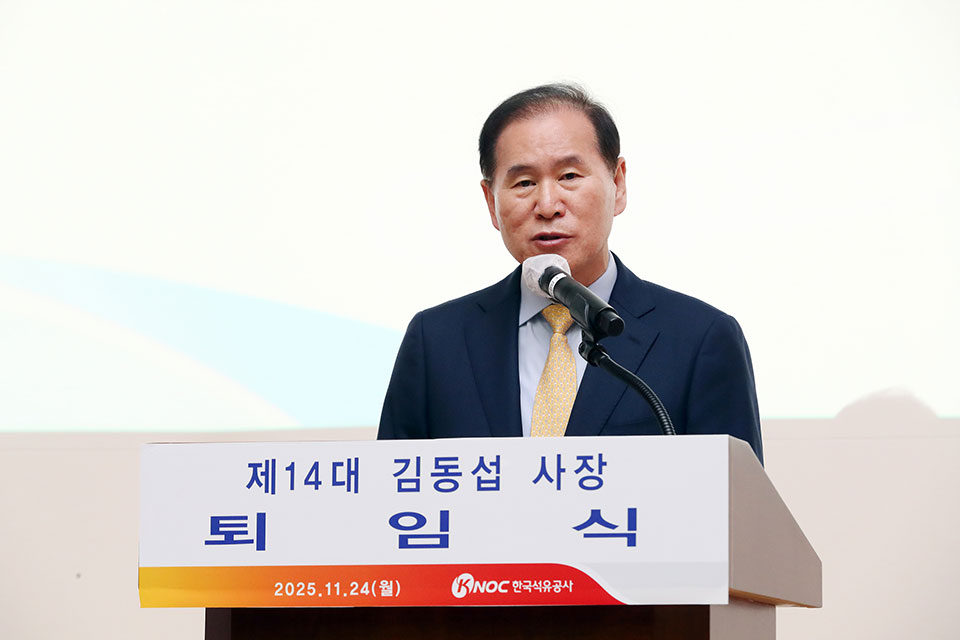
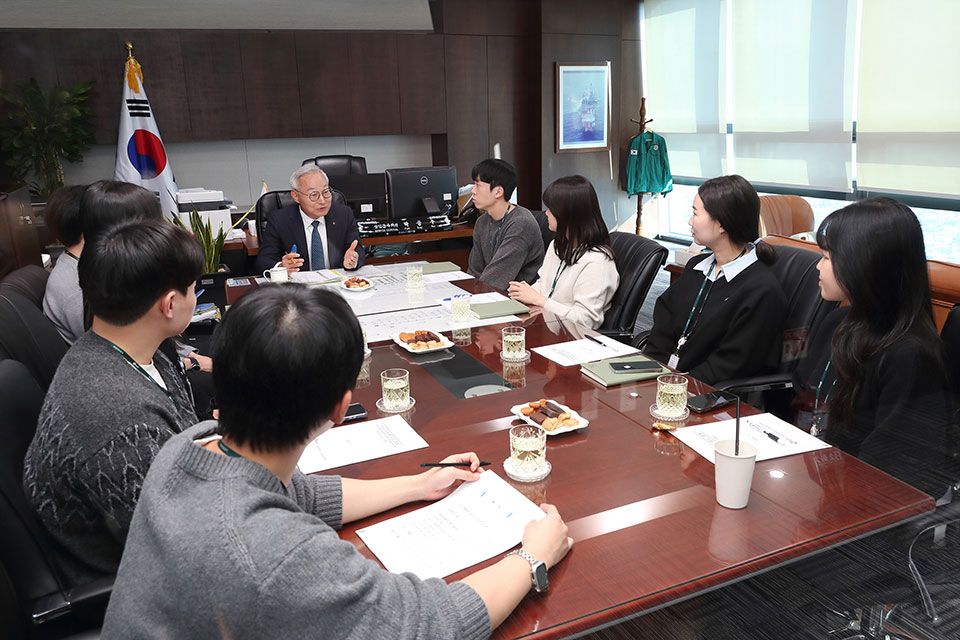
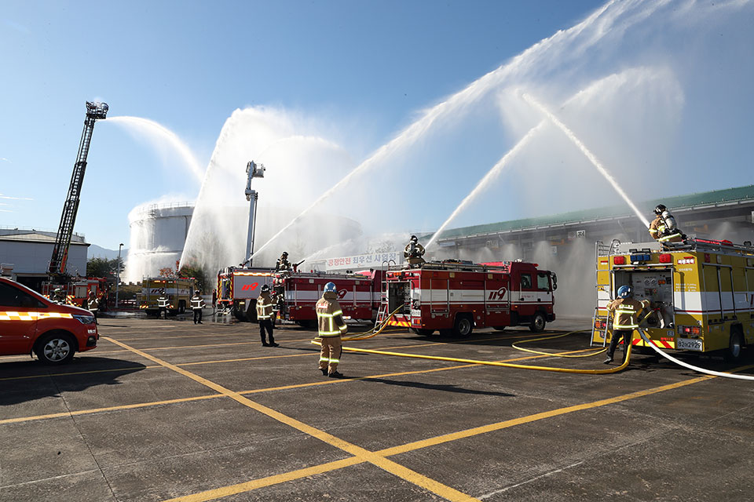
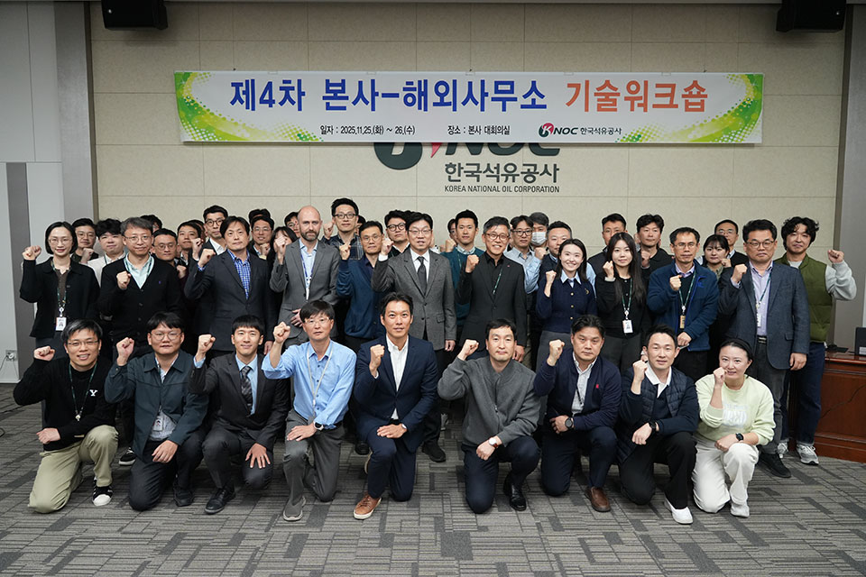
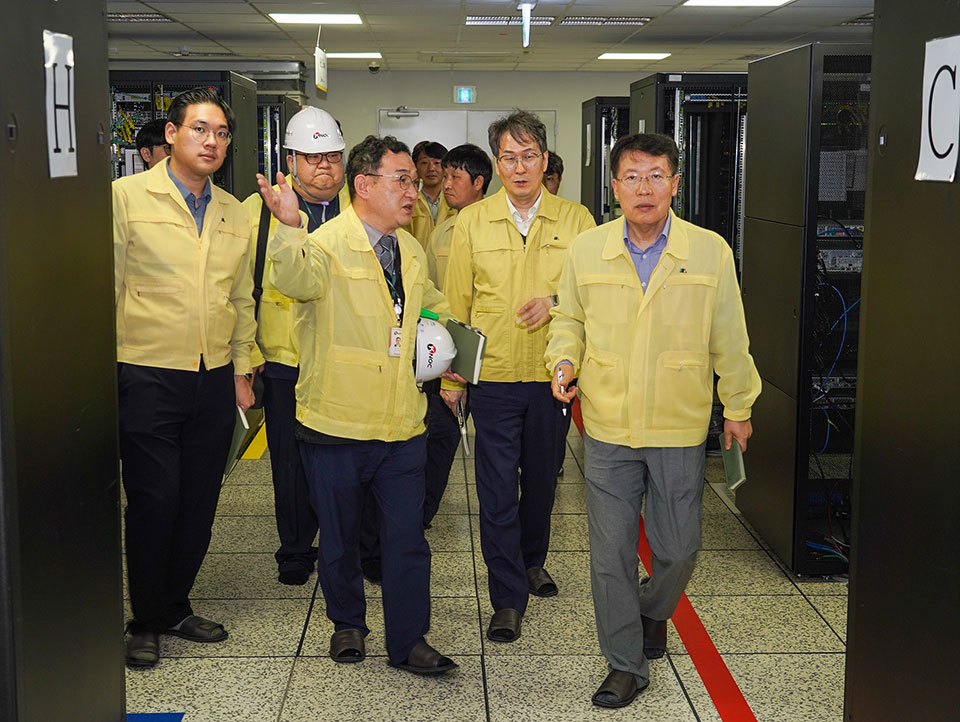
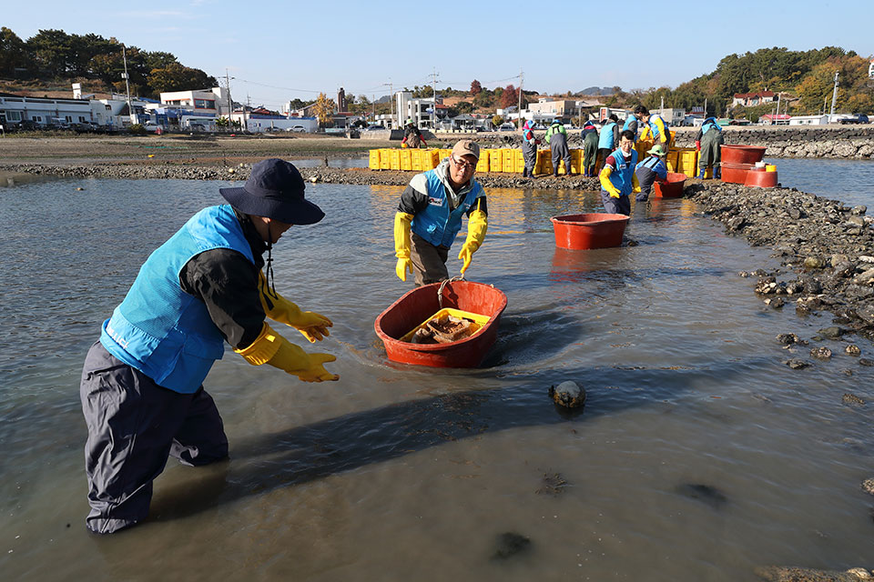

김동섭 前 사장 퇴임식 개최
11월 24일, 본사 1층 대강당에서 김동섭 前 사장의 퇴임식이 개최됐다. 약 4년 6개월 동안의 재임 기간을 마치고 퇴임식을 가진 김동섭 前 사장은, 공기업의 장으로서 대한민국 에너지 안보의 미래를 그릴 수 있었다는 사실이 인생의 큰 영광이었다고 전하면서, 앞으로도 국가 에너지 안보라는 큰 목표 아래 한마음이 되어 계속해서 전진해달라고 당부했다.

김동섭 前 사장 퇴임식박공우 상임감사위원, 청렴안전문화 확산 위해 교육 실시
공사가 11월 6일, 본사에서 박공우 상임감사위원 주관의 청렴·안전·내부통제 교육을 실시했다. 이번 교육은 조직 내 청렴문화 확산과 안전의식 제고, 내부통제기능 강화를 위해 이뤄졌으며, 박공우 상임감사위원은 이날 교육에서 청탁금지법 및 이해충돌방지법의 주요 내용과 직장 내 괴롭힘 예방법, 내부통제의 중요성 등에 대해 강의했다. 또한 구성원들의 안전의식 제고를 위해 지난 2년간 공사 사업장에서 발생한 사고 사례들과 중대재해처벌법 주요 내용 및 실제 법원 판결 사례 등에 대해 설명하는 한편, 내부 구성원의 부패 대응 능력 향상을 위해 신고 채널 접속 방법 등에 대해 교육했다.

청렴·안전·내부통제 교육 실시기관장 주재 재난대비 상시훈련 진행
11월 12일, 동해지사에서 기관장 주재의 2025년 재난대비 상시훈련이 진행됐다. 행안부 주관의 이번 훈련에는 동해시청, 해양환경공단 등 10개 기관에서 약 150명이 참여했으며, 지진에 의한 입출하대 누유와 화재에 대응하는 훈련을 진행했다. 공사는 이번 훈련을 통해 지난 3월 개정한 공사의 ‘위험물 화재 및 산불 현장조치 행동매뉴얼’에 따른 재난수준 단계별 대응 시스템을 확인하고, 유관기관들과의 협업체계가 효율적으로 작동하는지 집중적으로 점검했다.

기관장 주재 재난대비 상시훈련 현장제4차 본사-해외사무소 기술워크숍 개최
11월 25일과 26일 본사 4층 대회의실에서 제4차 본사와 해외사무소 간 기술워크숍이 개최됐다. 이번 워크숍은 공사 유전 현장의 기술 현안 및 극복 사례, 실패 사례 및 Best Practice 공유를 통해 E&P 기술력 향상 및 자산가치 증대에 기여하기 위함으로, 온라인와 오프라인 발표를 병행해 진행했다. 이틀에 걸쳐 약 20명의 구성원은, 현장의 공정 운영 최적화에 따른 매출액 증대, 추가 유망성 발굴을 위한 연구, 노후화된 해상 생산시설의 수명연장 사례 조사 등에 대해 발표했다.

제4차 본사-해외사무소 기술워크숍11월 한 달간 ICT 안전 점검 집중 실시
공사에서 11월 한 달간, 정보통신기술의 기반 시설에 대한 ICT 안전 점검을 집중적으로 실시했다. 화재와 지진 등 재난이 발생할 경우에도 국민 생활과 직결된 공공 서비스가 중단없이 제공되도록 하기 위함으로, 비상전원장치와 배터리 관리, 전기와 소방, 냉난방 설비의 유지 및 보수 등 재난대비시설의 보호계획 이행 현황 등을 점검했다. 공사는 이번 점검 결과를 바탕으로 노후 설비 교체 및 안전시설 보강 등 후속 조치를 추진하고, 향후에도 오피넷, 페트로넷과 같이 국민 생활 편익과 직결된 시스템의 중단없는 서비스 운영체계를 지속적으로 강화해나갈 계획이다.

ICT 안전 점검 실시해초 숲 복원 활동 진행
공사는 11월 5일 울주군 강양항 선착장에서 어촌에 희망을 입히는 벽화 그리기 활동을 진행했다. 대한적십자사와의 협업으로 진행된 이번 활동에서 공사 구성원들은, 노후한 담장과 선착장 일대를 바다와 물고기 등의 다양한 벽화로 단장했다. 이어 11월 20일에는 통영 화남 해안 일대에서 해초 숲 복원을 위한 잘피 심기 봉사활동을 실시했다. 잘피는 뿌리와 퇴적층에 탄소를 저장하는 블루카본 식물로, 이번 활동은 기후 변화로 감소한 해초 서식지를 회복하고 해양 생물의 산란장과 서식처를 되살리기 위해 진행됐다. 그런 가운데 공사는 12월 2일 울산공고 재학생 40여 명에게 진로 체험의 기회를 제공하고자 울산지사 및 본사 홍보관 견학을 지원했다.

해초 숲 복원 활동 현장